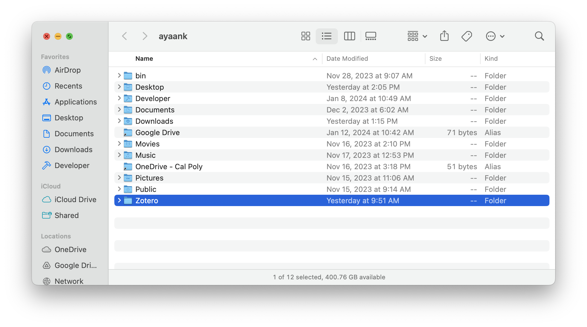

Interfaces
In this lesson, we'll learn:
- About interfaces, the general concept.
- About
interfaces, the embodiment of that concept in the Java language.- About how they are useful, using lists as an example.
- About the meaning of polymorphism.
What is an interface?
PONDER
What does the word "interface" mean to you?
You may have heard the term in various contexts. For example, a graphical user interface (GUI) is the "frontend" that a computer application presents to the user, usually with buttons to click, text or images on screen, and information dialogues to convey information.
An interface is the surface at which two systems interact. A system here can be a person, an organization, a computer systems, etc.
For example, consider the file system on your computer. You have data on your computer organised into a hierarchy of files and folders. You can interact with this file system using your operating system's file explorer GUI, e.g., the Finder app in macOS. What you can do is dictated by the behaviours exposed by the interface. That is, you can drag-and-drop files to move them, you can right-click on files or folders to copy, paste, rename, or delete them, and so on.

You can also interact with the same underlying system using another interface: the command line. The command line exposes the same behaviours and more — again, what you can accomplish is determined by the behaviours exposed by the interface.

In both cases, the interfaces above hide many details from you, the user, like the actual organisation of bits and bytes on disk, the permissions system that dictates who can see or use what files, etc.
Those interfaces are the surface at which the two systems—the user and the file system—interact with each other. Similarly, classes in Java (or, more generally, modules in software systems) expose behaviours that other classes or modules can use to interact with them.
We've already seen interfaces in action
Though there is an interface keyword and program construct in Java, we aren't talking about that just yet.
Even though we haven't used that word explicitly, we've already been thinking about interfaces.
When we create classes in Java, we tend to make our instance variables private and we make most of our instance methods public.
This is us defining the "public surface" of our class, or the "public surface" that instances of that class will expose to other classes that want to interact with them.
The "public surface" here would include:
- Method signatures for the public instance methods. I.e., their names, return types, and parameter types. These three give a sense of what the method does, what inputs it expects, and what outputs it will give back.
- Documentation. Often, there is more detail needed to describe a method's purpose. E.g., simply knowing that a method returns an
intdoesn't necessarily tell us much about what thatintmeans. There may be preconditions without which the method would not work as expected. There may be postconditions, i.e., effects that method will have that are not necessarily reflected in the returned value (for example, a setter method that mutates an object's state). So we also write documentation that accompanies every public method.1
In sum:
The interface of a class exposes what the class does, but not how it does it.
Interfaces in Java
The interface keyword in Java takes this principle and makes it a language-level construct.
An interface is a type of limited class. Unlike a class,
- An
interfacedeclares instance methods, but does not define them. That is, it only specifies method signatures, and nothing else.2 - An
interfacecannot declare instance variables. This makes sense from two perspectives.- First, if the
interfacedictated the available instance variables, it's straying closer to saying how things should be done, i.e., implementation details. This is not the goal of interfaces. - Second, with no method definitions, there wouldn't be much use for those instance variables.
- First, if the
- An
interfacecannot have constructors, nor can it have any data or behaviour. So, unlike aclass, aninterfacecannot be used as a blueprint from which to create objects. - An
interfacecan havestaticvariables andstaticmethods.
PONDER
Why do you think it's okay for
interfaces to havestaticmembers? Why do you suppose that would be useful?
By omitting all implementation details—like instance variables, and the bodies (definitions) of instance methods—the interface takes the "skeleton" of what a class should be able to do, and places that in a separate Java file.
Then, you can write a separate Java class that implements an interface by providing implementations for the methods that the interface declared.
That class can have whatever instance variables it needs for its implementations.
Just like a
classcan be used as a blueprint from which to create objects, andinterfaceis a blueprint for aclass.
Let's look at some examples!
A data structures example: Lists
Consider the List data structure. I don't mean lists in any particular programming language—I just mean the abstract notion of a list. Abstractly, we expect lists to support the following basic operations:
get(index): Object: We should be able to get the item at the specified index.add(item): We should be able to add an item to the back of the list.add(index, item): We should be able to add an item to the specified index in the list.remove(item): boolean: We should be able to remove the specified item from the list, and tell the user if something was removed or not.remove(index): Object: We should be able to remove an item from a specified index in the list, and return the item that was removed.contains(item): boolean: We should be able to check if the list contains the specified item.size(): We should be able to get the number of items in the list.
In most cases, we don't actually care how those operations are defined, as long as they accomplish their goals. A list is a list regardless of how the operations above are implemented.
The Java standard library provides the List interface to capture these expected behaviours.
The Java List declares many more behaviours than what I've said above, but the idea remains the same: it declares the signatures for those methods, and provides documentation describing what the methods should accomplish, but gives no restrictions on how those tasks should be implemented.
The List interface does this through the use of abstract methods.
Abstract methods are method declarations without definitions. I.e., they only declare the method signature, but do not include a method body. To put it in terms we've been talking about, abstract methods dictate what a
Listshould do, but not how it should do it.
Below is a super-pared-down example of what the List interface might look like.
Because the interface contains no data and no behaviour, it cannot be initialised. That is, you cannot do the following:
List myList = new List(); // This will not compile
The left-hand-side of the above statement is okay.
The right-hand-side will cause a compiler error—you cannot use new to create an instance of an interface, because the interface is just "meta-data". There's nothing there to initialise.
Using the List interface
Armed with the interface above, we can create list implementations.
You have already seen two of them: ArrayList and LinkedList.
Both those data structures implement the behaviours required by the List interface. The ArrayList uses a backing array to keep track of the list's contents, and the LinkedList uses a chain of nodes and pointers.
But the "contracts" for the add, remove, contains, and size methods are fulfilled by both implementations.
A class can use the implements keyword to declare that it is an implementation of an interface.
The class must contain implementations for all the abstract methods that were declared in the interface.
For example, here is what the ArrayList class might look like. It declares that it implements the List interface, and once it does so, it must include implementations (i.e., non-abstract, or "concrete" methods) for all the abstract methods that were declared in the interface.
/**
* This is (clearly) not the actual ArrayList implementation.
* Just an illustration of what it might look like.
*/
public class ArrayList implements List {
private E[] backingArray;
private int size;
/**
* Initialise an empty ArrayList with a capacity for 10 items.
*/
public ArrayList() {
this.size = 0;
this.backingArray = new E[10];
}
public E get(int index) {
return this.backingArray[index];
}
public void add(E e) {
// If the list is at capacity, move its contents to a new, bigger
// backing array.
if (this.size == this.backingArray.length) {
E[] newBackingArray = new E[this.backingArray.length * 2];
// Transfer over all current list items to the new backing array.
for (int i = 0; i < this.size; i++) {
newBackingArray[i] = this.backingArray[i];
}
this.backingArray = newBackingArray;
}
// Add the new item to the end of the list.
this.backingArray[this.size] = e;
this.size++;
}
public void add(int index, E e) {
// omitted for brevity
}
public boolean remove(E e) {
// omitted for brevity
}
public E remove(int index) {
// omitted for brevity
}
public boolean contains(E e) {
// omitted for brevity
}
}
The ArrayList and LinkedList classes must contain implementations for all the abstract methods declared in the List interface.
These implementations can be different from each other.
In the example above, the ArrayList's add method contains logic for making sure we stay within the capacity of our backing array.
The LinkedList's add method will include a different set of rules for appending to a LinkedList.
What's important is that all the methods exist and contain the required signatures. If any of the methods are omitted (or if the names are misspelled, parameter lists are different, etc.) you will get a compiler error that won't go away until you implement all of the methods.
The two list implementations can contain:
- Instance variables — these can be different for each class.
- Additional methods — they can (and do) specify additional behaviours in addition to what is required by the
Listinterface.
The relationship between an interface and its implementing subclasses
When a class implements an interface, the class is said to be an implementing subclass of the interface.
Recall from our lesson on method dispatch that the Object class is the root of the Java type hierarchy.
All reference types in Java are subtypes or child types of the Object class.
When we create an interface (say, the List interface), we are introducing that interface into the type hierarchy.
And when we create implementations of the List interface, we are saying that ArrayList and LinkedList are subtypes of List.
A
Listis anObject. AnArrayListis aList, and aLinkedListis aList.
Our updated Java type hierarchy now looks like this:3
flowchart BT Other[All reference types in Java, including...] Other & Point & String & List --is a--> Object ArrayList & LinkedList --is a--> List
This means that we can declare and initialise lists like this:
// For example, say we are working with a list of Points
List<Point> points = new ArrayList<>();
PONDER
What's the static type of the
pointsvariable above? What's its dynamic type? When might we be faced with a situation where its useful or necessary to have these be different?
Why is this useful?
Recall our discussion on coupling and cohesion. Our goal is to write cohesive classes that are loosely coupled with each other. If classes are tightly coupled, they have to change together, because they depend on each other's implementation details. When classes are loosely coupled, they are mostly independent. They still work together to enable the system as a whole to function, but it means that a class in a larger system can be modified without other classes noticing, as long as its public interface stays the same.
Usually, we achieve this by making all the data inside a class private.
The idea is simple: if we hide internal implementation details (like the instance variables and methods that are only used internally), then other classes can't depend on those implementation details.
The interface construct in Java codifies this by creating a whole new "type", just for the public interface.
So for example, suppose you are writing a function in a statistics package that computes a mean from a collection of data.
You would ideally make your function take a List as a parameter, instead of the more specific ArrayList or LinkedList.
public static double mean(List<Integer> data) {
if (data.size() == 0) {
return 0.0;
}
int sum = 0;
for (int current : data) {
sum = sum + current;
}
return sum / data.size();
}
Some other module that is using this function is now free to use whatever list implementation it wants — the ArrayList or the LinkedList.
When that module calls your mean function, the input will be a List at compile time, but will be the specific list subtype at run tme.
Dynamic dispatch will help the runtime figure out whether to call ArrayList methods or LinkedList methods while the program runs.
This is an example of polymorphism. Polymorphism literally means "many forms" — the data variable in the function above can take (one of) many forms at run time.
Your mean function is decoupled from the specifics of how the other module is handling its data. It can use a LinkedList, an ArrayList, or some newfangled list type that we haven't heard of, as long as it exposes a List-like interface; your function would never know the difference.
-
The exact format of that documentation is quite simple and beyond the scope of this lesson. Documentation in Java is written in a format that can be understood by a tool called JavaDoc. JavaDoc can read your comments and generate a web-page containing documentation. For example, this ArrayList documentation was generated by JavaDoc based on the comments in this Java file. Here is a nice concise overview of the JavaDoc format ↩
-
This is a temporary simplification. We'll talk about
defaultmethods in the next lesson. If you already know about them, allow me this sin of omission for the time being. ↩ -
In reality, there are a few more "intermediate" layers between
ObjectandList— but this gets the point across. We will talk in the next couple of lessons about interfaces that are subtypes of other interfaces. ↩